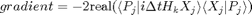
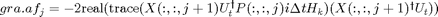
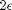
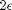

Filename : maximise_robustfidelity
Contents
Description
This program calculates the gradient which inturn helps in calculation of new set of controls. Check the GRAPE paper by N Khaneja for specifics. gra.af are gradients, which are supplied to find_lambda_bconst for calculating conjugate gradients. check find_lambda_bconst for more details.
function [epsi_new u skipping_calc_fid U_s X_s] = maximise_robustfidelity(P,X,u,epsi,iter,Fid_first)
global gra
t=(gra.T/gra.N);
U_t=gra.U_target;
Hrf=gra.Hrf;
epsi_range=[0 epsi 2*epsi];
spinlist = gra.spinlist;
calculation of gradient (see GRAPE paper for specifics)

which translates to following in our notations scheme,

su=zeros(gra.N,gra.m); for l=1:length(gra.rfINHrange) trxjpj = trace(X(:,:,gra.N+1,l)'*U_t); for j=1:gra.N XjUtPj = X(:,:,j+1,l)*U_t'*P(:,:,j,l); for k=1:gra.m gra.af(j,k,l) = -2*real(trace(XjUtPj*1i*t*Hrf{1,k})*trxjpj)/2^(2*gra.nspins); end end su=su+gra.rfINHiwt(l)*gra.af(:,:,l); gra.af=su; end
Calculation of conjugate gradients
lambda=find_lambda_bconst(iter);
The conjugate gradient is evaluate for  = and  and fidelity is saved in fide. check quadratic_fit for more details
= and  and fidelity is saved in fide. check quadratic_fit for more details
U=zeros(2^gra.nspins,2^gra.nspins,gra.N); fide(1)=Fid_first; for d=2:length(epsi_range) u_new = u + epsi_range(d)*lambda; u_new=penalizecontrols(u_new); fid=zeros(1,length(gra.rfINHrange)); for k=1:length(gra.rfINHrange) X(:,:,1)=eye(2^gra.nspins); for j=1:gra.N sum_hamil=zeros(2^gra.nspins); for n=1:length(spinlist) A=gra.rfINHrange(k)*sqrt(u_new(j,n)^2+u_new(j,n+length(spinlist))^2); phi=atan2(u_new(j,n+length(spinlist)),u_new(j,n)); sum_hamil = sum_hamil+A*cos(phi)*(gra.Hrf{1,n}) + A*sin(phi)*(gra.Hrf{1,n+length(spinlist)}); end U(:,:,j,k) = expm(-1i*(gra.del_t)*(gra.Hint + sum_hamil)); X(:,:,j+1,k)=U(:,:,j,k)*X(:,:,j,k); end fid(k)= (abs(trace(gra.U_target'*X(:,:,gra.N+1,k)))/2^(gra.nspins))^2; end eval(['Usave' num2str(d) '=U;']); eval(['Xsave' num2str(d) '=X;']); fide(d) = fid*gra.rfINHiwt; end
Doing a quadratic fit, check the program quadratic_fit for more details
multi_fac=quadratic_fit(fide); gra.mfa(iter)=multi_fac; epsi_new=multi_fac*epsi; u=u+epsi_new*lambda; % The new set of controls are penalized u=penalizecontrols(u); % checking if the new $\epsilon$ is either 1 or 2. If yes, then send a flag % using skipping_calc_fid to the rungrape for skipping the matrix % exponentiation. if(multi_fac==2) skipping_calc_fid = 1; U_s=Usave3; X_s=Xsave3; elseif(multi_fac==1) skipping_calc_fid = 1; U_s=Usave2; X_s=Xsave2; else skipping_calc_fid = 0; U_s=[]; X_s=[]; end